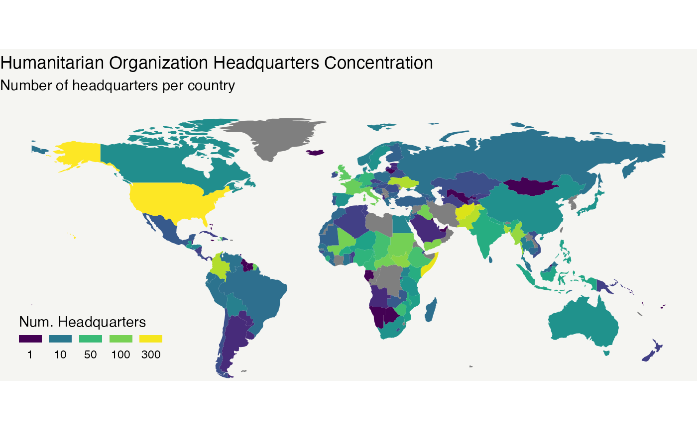
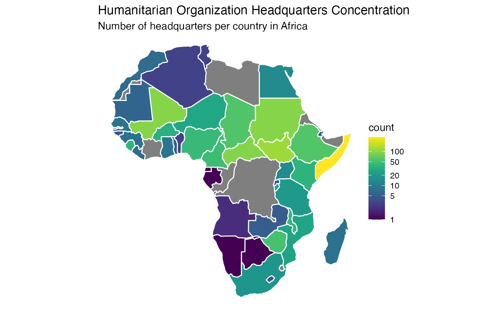

Where are the headquarters of humanitarian organizations?
examples.Rmd
# read in libraries
library(gdho)
library(tidyverse)
library(sf) # for geolocation
library(rnaturalearth) # for geolocation
library(viridis) In this demo, we will show you how to plot a map to reflect the headquarter concentration of the humanitarian headquarters around the world. At the end of the demo, you will learn how to:
- Summarize headquarter information from
gdhodata - Combine
gdhodata with external geolocation data - Visualize a choropleth map about headquarter location distribution
1. Data processing: summarize headquarters
First, we want to get a table showing how many headquarters each
country has. We transform the column hq_location to get the
information:
gdho_hq <- gdho |>
filter(!is.na(hq_location)) |> # remove NA data
group_by(hq_location) |> # group by countries
summarise(count = n()) |> # count the number of headquarters of each country
arrange(desc(count)) # sort by descending order
gdho_hq |>
head()
#> # A tibble: 6 × 2
#> hq_location count
#> <chr> <int>
#> 1 United States 324
#> 2 Somalia 266
#> 3 Afghanistan 240
#> 4 Pakistan 177
#> 5 Colombia 168
#> 6 Ukraine 165We can see that the top six countries having the most humanitarian organization headquarters are United States, Somalia, Afgahnistan, Pakistan, Colombia and Ukraine.
2. Data combination: join with geodata
To plot a choropleth map, we also need to acquire geolocation
information of the countries (e.g. the borders). Here we use the package
rnaturalearth and sf to help. The package
rnaturalearth contains geodata about the countries in the
world, and we simply import this dataset and combine it with our
gdho data.
world <- rnaturalearth::ne_countries(returnclass = "sf")
ho_map <- left_join(world, gdho_hq, by = c("name_long" = "hq_location"))3. Map visualization: concentration of the headquarters
Now, we have a data table that contains all information we need: the counts of humanitarian organization headquarters each country has, and the geo-information of each country. We start by plotting the world view of the headquarter concentration.
ggplot() +
theme_void() +
geom_sf(data = ho_map, aes(fill = count), color = "white", lwd = 0) + # plot map
scale_fill_viridis(trans = "log", breaks=c(1,10,50,100,300),
name = "Num. Headquarters",
guide = guide_legend(keyheight = unit (2, units = "mm"),
label.position = "bottom",
title.position = 'top', nrow = 1)) +
labs(
title = "Humanitarian Organization Headquarters Concentration",
subtitle = "Number of headquarters per country"
) + # add metadata
theme(
plot.background = element_rect(fill = "#f5f5f2", color = NA),
legend.position = c(0.13, 0.15)
) + # polish the appearance
coord_sf(ylim = c(-50, 90)) # Remove antarctic
#> Warning: A numeric `legend.position` argument in `theme()` was deprecated in ggplot2
#> 3.5.0.
#> ℹ Please use the `legend.position.inside` argument of `theme()` instead.
#> This warning is displayed once every 8 hours.
#> Call `lifecycle::last_lifecycle_warnings()` to see where this warning was
#> generated.
Now we have seen how the headquarters are distributed globally, it may worth zoom in to see in detail. For example, let’s check out Africa:
af_map <- ho_map |> filter(continent == "Africa") # Filter data with only African countries
ggplot() +
theme_void() +
geom_sf(data = af_map, aes(fill = count), color = "white", lwd = 0.5) +
scale_fill_viridis(trans = "log", breaks=c(1,5,10,20,50,100)) +
labs(
title = "Humanitarian Organization Headquarters Concentration",
subtitle = "Number of headquarters per country in Africa"
) 
References: